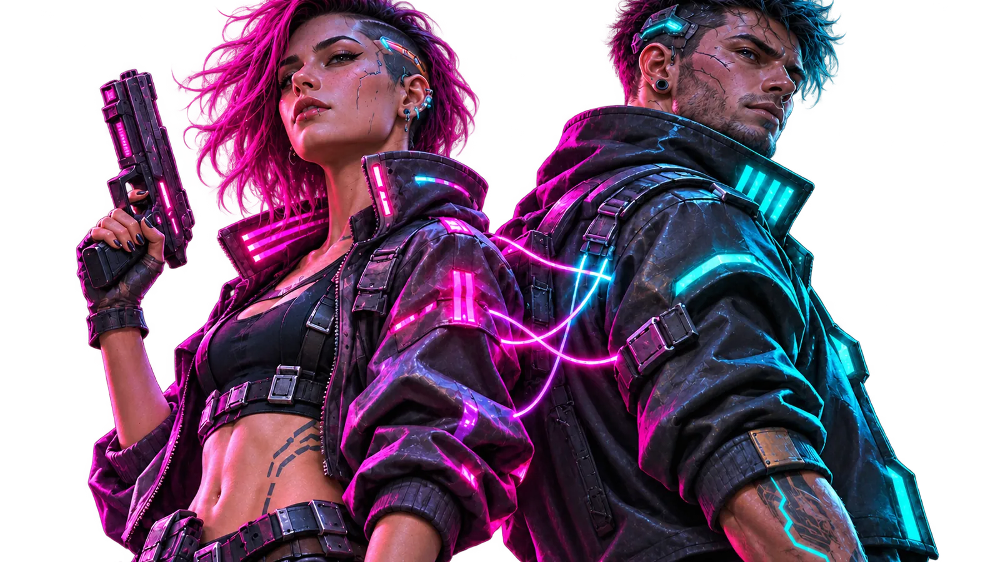

Home › Blog › Cyberpunk 2077 update 2.5
Blog · NewsCyberpunk 2077: l'update 2.5 cambia Night City, il co-op resta una mod

Immagine illustrativa non ufficiale: non è un artwork di Cyberpunk 2077.
Contenuti nuovi e supporto mod ufficiale, ma il multiplayer non è firmato CD Projekt RED: cosa c'è nell'update 2.5 e cosa arriva dalla community.
· Redazione BENDREX
A quasi sei anni dal lancio, Cyberpunk 2077 non ha chiuso i battenti. Il 22 ottobre 2026 è arrivato l'aggiornamento 2.5, “Edgerunners 2 Update”, gratuito su PC, Mac (Steam, GOG ed Epic Games Store), PlayStation 5 e Xbox Series X|S; su Nintendo Switch 2 e su Mac App Store arriva nei giorni successivi. Insieme all'update è debuttata la seconda stagione dell'anime Cyberpunk: Edgerunners su Netflix, e i due prodotti si parlano apertamente.
Nello stesso periodo è esplosa la curiosità per un co-op da otto giocatori. Qui serve chiarezza: sono due storie diverse, e solo una delle due è ufficiale.
- Ufficiale: l'aggiornamento 2.5, con nuove missioni, la doppia pistola, la personalizzazione del cyberware e il supporto alle mod multipiattaforma via mod.io.
- Non ufficiale: il co-op arriva da mod della community. NightCoop è in open beta, ChoomLink in alpha; nessuno dei due è supportato da CD Projekt RED.
Cosa c'è nell'update 2.5
La novità narrativa principale è “Cercasi Edgerunner!”, una missione secondaria ambientata prima degli eventi della seconda stagione. Si sblocca completando “Il colpo” e due contratti per Wakako, poi aspettando un suo messaggio. Al suo interno si ottiene un set di equipaggiamento da cinque pezzi ispirato al personaggio King; arriva anche una nuova stazione radio, HKGN 102.0 FM, con brani tratti dalla serie.
Sul fronte del combattimento il pezzo forte è il talento “Doppia razione”, nell'albero Freddezza, con quattro talenti ausiliari: permette di impugnare due pistole o revolver della categoria Armi tradizionali. Per il look, si possono personalizzare le mani cromate — lame da mantide, braccia di gorilla, monocavo e sistema di lancio proiettili — presso cinque armocromisti sparsi per la città, ognuno con un catalogo e colori personalizzabili. A questo si aggiungono cinque nuovi set di abiti, il set da infiltrato NUS, nuove acconciature e cornici in stile gioco di carte per la modalità foto.
Due aggiunte “da esplorazione”: “Benvenuti in paradiso”, missione secondaria narrata da Richard Night che si sblocca completando “Il colpo” e raggiungendo il livello 15 di reputazione; e dodici nuovi arcani minori dei tarocchi, che rientrano in un ampliamento della missione “Fool on the Hill” e si attivano scansionando una delle nuove carte. Collezionarli tutti dà una ricompensa speciale.
Il mondo a colpi di mod (ma non è multiplayer)
Il cambiamento più interessante per chi gioca su PC è l'arrivo del supporto alle mod multipiattaforma basato su mod.io: una selezione curata di mod si può cercare e installare direttamente dal menu di gioco, su PC, Mac, PS5, PS5 Pro, Xbox Series X|S e Switch 2. CD Projekt RED lo definisce “un primo passo” e promette altre mod nel tempo. Attenzione a un dettaglio: un salvataggio con mod è contrassegnato da un'icona dedicata e, su console, non permette di ottenere obiettivi e trofei.
Il supporto mod.io non è una modalità multiplayer: è un canale per installare contenuti creati dai giocatori. È una distinzione piccola solo in apparenza, perché è proprio da qui che nasce la confusione circolata in questi giorni.
Sul lato tecnico, l'update porta DLSS 4.5 con Multi Frame Generation fino a 6X e Dynamic MFG, più il Transformer model di seconda generazione; secondo NVIDIA le modalità 6X e Dynamic MFG sono riservate alle GPU GeForce RTX 50, mentre il Transformer aggiornato gira anche sulle RTX precedenti. Cambia anche FSR: l'upscaling FSR 3 non è più incluso, mentre restano FSR 2.1, FSR 4 e FSR 3.1 con Frame Generation, e arriva un interruttore per FSR Anti-Lag 2. Arrivano inoltre MetalFX Frame Interpolation su Mac, il supporto agli effetti 3D sui monitor Samsung Odyssey 3D compatibili, un HDR migliorato e il cursore FOV su console.
Il co-op: mod, non update
Ed eccoci alla parte da maneggiare con cura: non esiste una modalità multiplayer ufficiale di Cyberpunk 2077, e CD Projekt RED non ne ha annunciata una con il 2.5. Quello di cui si parla in questi giorni è un progetto della community, anzi due.
Il più chiacchierato è NightCoop, open beta gratuita dal 23 ottobre 2026. Promette fino a otto giocatori nella stessa Night City: il save dell'host diventa il mondo condiviso, mentre ogni giocatore porta il proprio V, con aspetto, livello, equipaggiamento e cyberware personali. Le scelte di dialogo passano a maggioranza (oltre il 50%), le cutscene sono sincronizzate e l'host può attivare il PvP. Chi cade finisce “a terra” e può essere rianimato.
I limiti contano quanto le feature: al momento è solo per Windows 10 o 11 a 64 bit, serve una copia con licenza del gioco (Steam, GOG o Epic) e la stessa build di NightCoop su ogni macchina; il mod dichiara compatibilità con le versioni 2.5 e 2.31 e richiede solo RED4ext, già dentro l'archivio, senza Cyber Engine Tweaks. La connessione è diretta o tramite hub, con traffico cifrato end-to-end. NightCoop non è affiliato a CD Projekt RED e gli autori avvisano che la parte più testata è l'Atto 1 con le side quest: il resto può funzionare, ma con più bug. Prima di provarlo, backup dei salvataggi.
Un secondo progetto è ChoomLink, su Nexus Mods (versione 0.2.3 del 2 novembre 2026, autore visualduck). È ancora in early alpha: dichiara fino a otto giocatori, la campagna in co-op e modalità come Free Roam, Free for All, Search and Destroy e Survival, su Steam, GOG ed Epic. Richiede Cyberpunk 2077 2.5 e diversi framework (Cyber Engine Tweaks, RED4ext, redscript, Codeware, TweakXL, ArchiveXL); conviene allineare la versione del mod tra i giocatori. Anche in questo caso: bug e crash attesi, backup obbligatorio.
Restano poi altri progetti, ma non sono alternative pronte per tutti: CyberMP, per esempio, è in beta semi-aperta e al momento non risulta offrire la campagna in co-op. Diffidare di launcher o pacchetti che promettono un “multiplayer ufficiale”: oggi non esiste.
Cosa significa per chi gioca su PC
L'update 2.5 è la parte stabile e consigliata: contenuti nuovi, mod.io e le novità grafiche. Il co-op è sperimentale e non ha requisiti hardware o benchmark ufficiali: il mod gira dentro il gioco, quindi valgono i requisiti Steam di Cyberpunk 2077, con un costo extra di CPU e rete che nessuno ha ancora misurato in modo affidabile. Se stai valutando un upgrade, le build PC di BENDREX partono dagli stessi scenari di gioco.
Se vuoi provare NightCoop o ChoomLink, parti dai siti ufficiali dei progetti, controlla la versione del gioco e quella del mod, verifica i checksum quando disponibili e non scaricare pacchetti da mirror di terze parti. E soprattutto: non aspettarti il supporto di CD Projekt RED, perché non c'è.
Voi provereste NightCoop in open beta, o preferite aspettare un multiplayer ufficiale? Ditecelo sui nostri canali.
Fonti: CD Projekt RED — update 2.5 disponibile (22/10/2026) · CD Projekt RED — note patch 2.5 (21/10/2026) · NightCoop — sito ufficiale · ChoomLink su Nexus Mods · CyberMP · NVIDIA — DLSS 4.5.